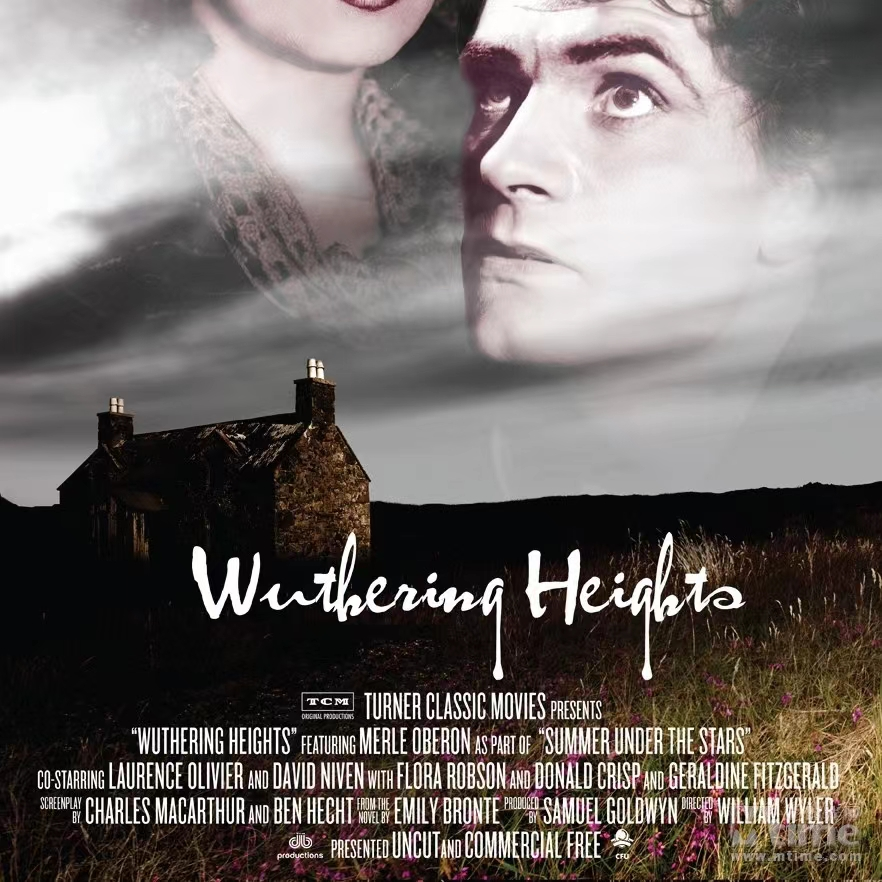
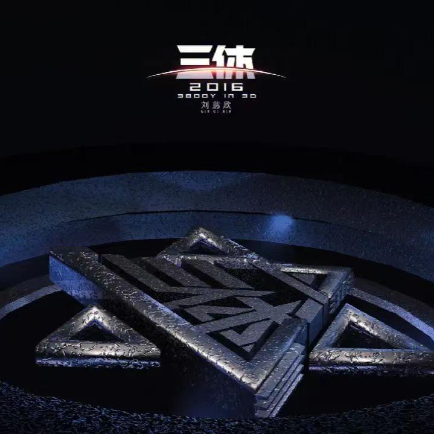
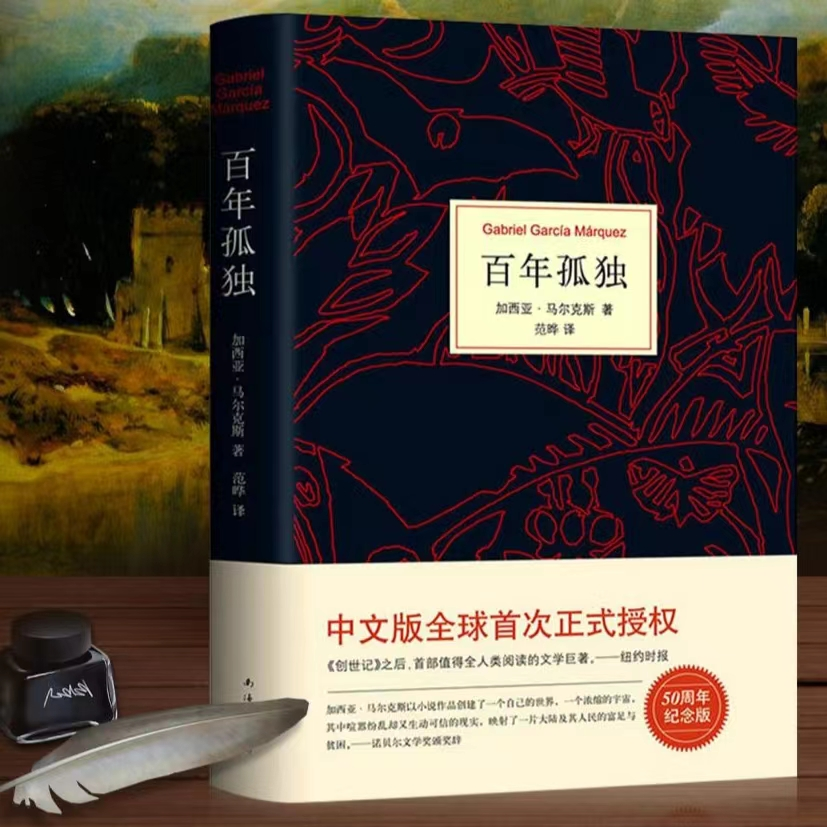
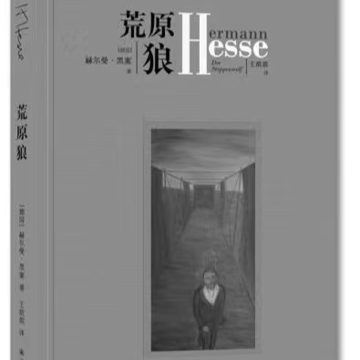

《呼啸山庄》是英国19世纪文学的代表作之一，讲述了主人公希斯克利夫为了复仇而采取疯狂行动的故事。通过描写主人公内心的痛苦和无奈，小说展现了人性的复杂性和情感的力量。它用深情而暴力的方式，表达了对爱情的执着和无法抗拒的渴望。同时，小说也揭示了英国社会的黑暗面和人性的脆弱性。它通过情感的描绘，引发读者对人性的思考和反思。

给岁月以文明，而不是给文明岁月，给时光以生命，而不是给生命以时光。
死亡是唯一一座永远亮着的灯塔，不管你向哪里航行，最终都得转向它指引的方向。一切都会逝去，只有死神永生。
无知和弱小不是生存的障碍，傲慢才是。
——《三体》

《百年孤独》是哥伦比亚作家加西亚·马尔克斯创作的一部经典文学作品，讲述了布恩迪亚家族七代人的传奇故事，以及加勒比海沿岸小镇马孔多的百年兴衰。这本书通过描写布恩迪亚家族的七代人，展现了他们经历的政治、战争、革命以及个人情感的起伏变化，其中融入了魔幻现实主义的元素。通过讲述他们的故事，马尔克斯巧妙地展示了时间、孤独、爱、痛苦等主题，给读者带来了深刻的思考和哲理的启示。
概率思维就像硬币的两面，学会理性分析。为什么刘润老师如此推荐概率思维呢？那是因为概率思维其实就像硬币的两面，一而是对我们有利的概率，称为运气，而另一面是对我们不利的概率，称为倒霉。我们要做的，就是尽可能多地把运气那面超过倒霉那面，如此，创业成功会增加更大的筹码，让决策更加理智。概率思维就是要我们心平气和地承认，就算做对了所有的事情，成功的概率也不高，可能在互联网行业只有不超过5%的概率。那么，在这样的情况下，我们就要思考，应该用什么样的方式去提高概率。

《荒原狼》的时代是一个信仰缺失的堕落时代，黑塞在作品中充分展现了时代的堕落和罪恶，并在以哈立为代表的荒原狼身上展现了个体灵魂的苦难和困境。